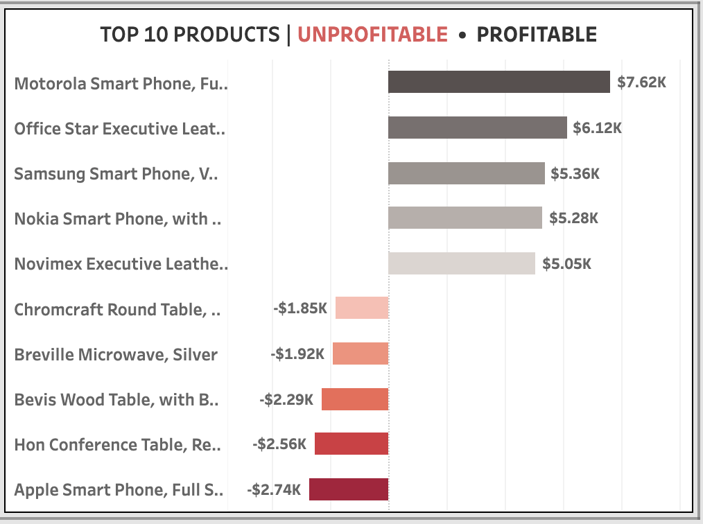

Finding 01
Revenue Growth Was Eroding Profitability
- Products discounted above 40% frequently generated negative profit
- Some transactions recorded losses up to -$2.7K
- Revenue growth relied heavily on discount-driven sales
Business Impact: The business was optimizing for revenue growth rather than sustainable profitability.
